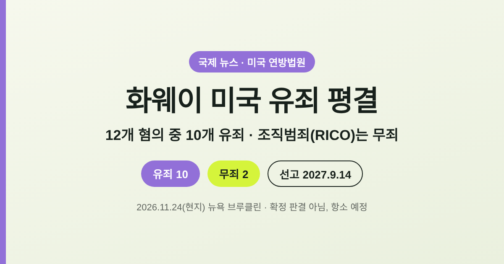
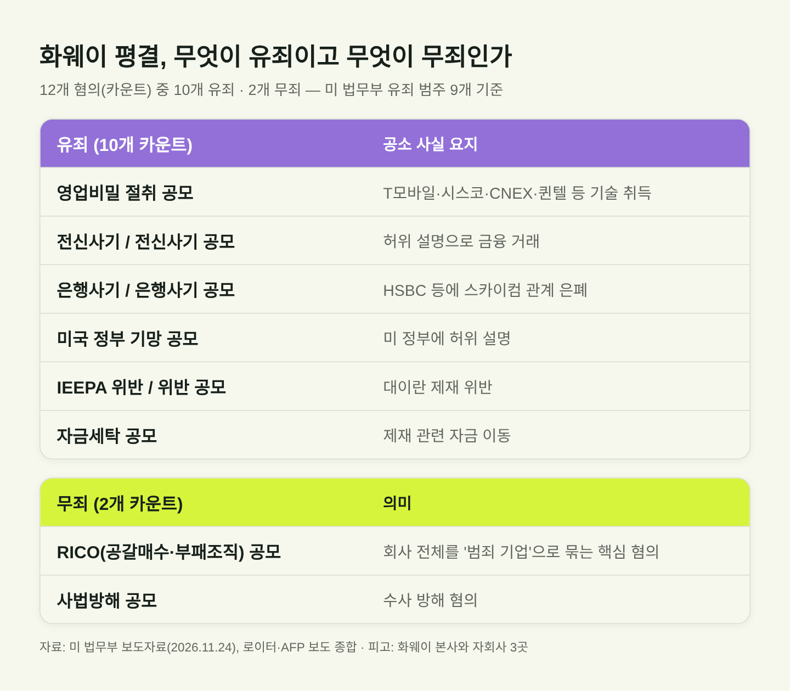
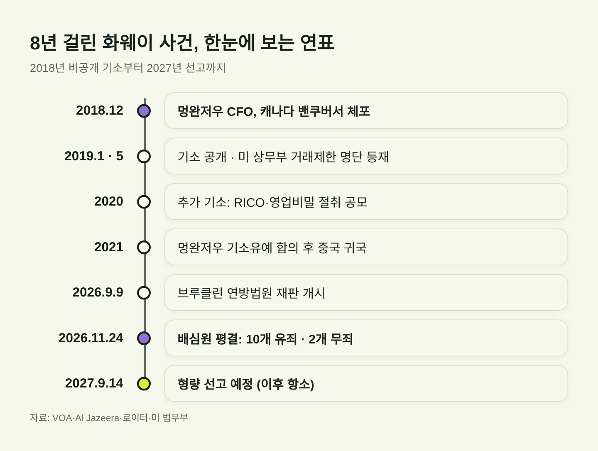
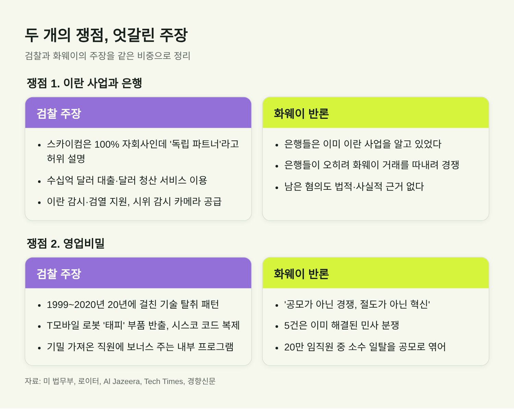
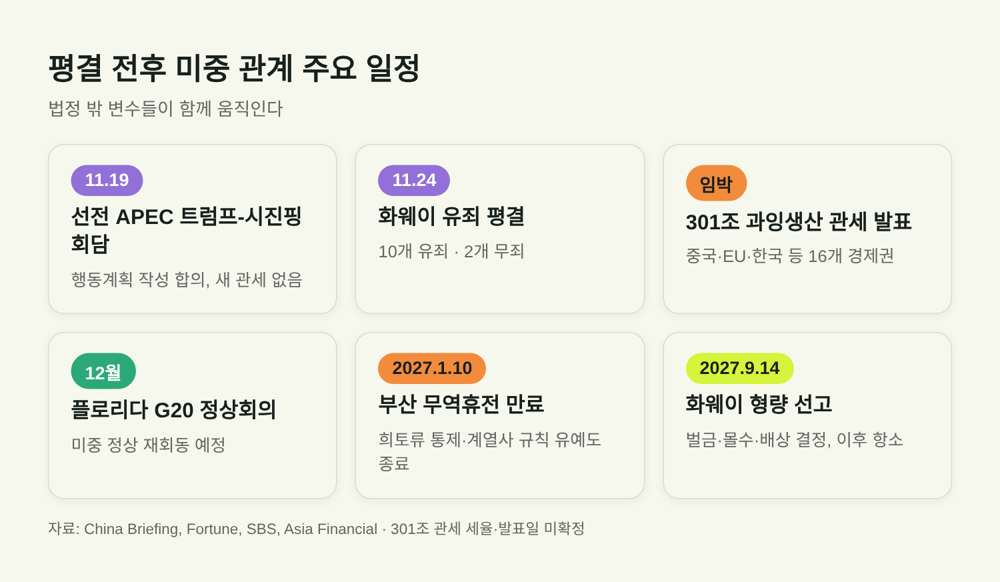
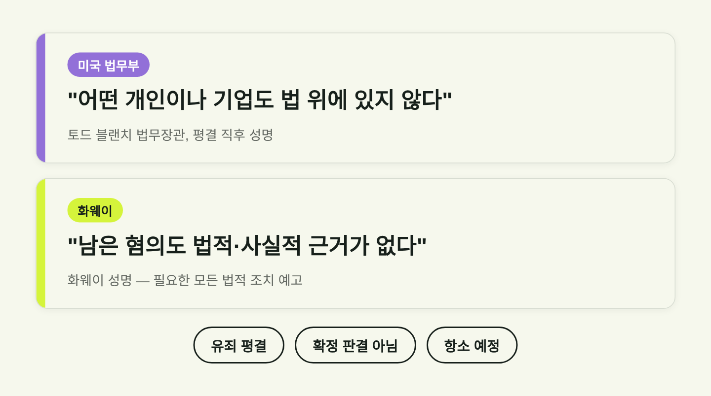

화웨이 미국 유죄 평결, 12개 혐의 중 10개 인정…조직범죄는 무죄

이번 글에서는 미국 법원이 중국 화웨이에 내린 유죄 평결을 정리해 보겠습니다. 어떤 혐의가 인정되고 어떤 혐의가 무죄로 판단됐는지, 그리고 이 결정이 미중 관계와 제3국 기업에 무엇을 남기는지 차례로 살펴봅니다.
3줄 요약
- 2026년 11월 24일(현지), 뉴욕 브루클린 연방법원 배심원단이 화웨이와 자회사 3곳에 12개 혐의 중 10개 유죄를 평결했습니다.
- 은행사기·전신사기·대이란 제재 위반·영업비밀 절취 공모 등은 유죄, 검찰의 핵심이던 조직범죄(RICO) 공모와 사법방해 공모는 무죄입니다.
- 형량 선고는 2027년 9월 14일 예정이며, 화웨이는 항소 방침입니다. 아직 확정 판결이 아닙니다.
■ 무슨 일이 있었나
평결은 미국 뉴욕 동부연방지방법원에서 나왔습니다. 담당은 앤 도넬리(Ann M. Donnelly) 판사입니다. 피고는 화웨이 본사와 화웨이 디바이스, 미국 연구개발 법인 퓨처웨이, 화웨이 디바이스 USA 등 법인 네 곳입니다.
재판은 9월 9일 시작해 약 11~12주 이어졌습니다. 보도마다 '두 달 이상', '12주', '석 달'로 표현이 엇갈리는데, 실제로는 두 달 반 남짓입니다. 로이터에 따르면 검찰 측 증인이 60명 넘게, 변호인 측 증인이 15명 출석했습니다. 배심원단은 나흘 안팎 평의한 끝에 결론을 냈습니다.

미 법무부가 밝힌 유죄 범주는 아홉 가지입니다. 영업비밀 절취 공모, 전신사기와 그 공모, 은행사기와 그 공모, 미국 정부 기망 공모, 국제비상경제권한법(IEEPA) 위반과 그 공모, 자금세탁 공모입니다. 법무부는 "하나 이상의 피고 법인이 각 혐의에 유죄"라고 표현했습니다. 범주는 아홉인데 유죄 카운트가 열이므로, 한 범주에 복수 카운트가 있는 것으로 보입니다. 정확한 구성은 공개 자료로 확인되지 않았습니다.
무죄는 두 가지입니다. 하나는 '공갈매수·부패조직법(RICO)' 공모, 다른 하나는 사법방해 공모입니다. 일부 매체가 "나머지 혐의는 기각(dropped)됐다"고 썼지만, 정확히는 배심원단의 무죄 평결입니다.
■ 왜 중요한가 — 유죄와 무죄가 각각 의미하는 것
검찰로서는 7년 가까운 수사·기소의 결실입니다. 토드 블랜치 법무장관은 "어떤 개인이나 기업도 법 위에 있지 않다"고 밝혔습니다. 타이슨 두바 법무부 형사국 차관보는 화웨이가 20년 넘게 "사기, 절도, 기만" 위에 제국을 세웠다고 비판했습니다.
다만 화웨이도 얻은 것이 있습니다. RICO는 화웨이라는 회사 자체를 하나의 '범죄 기업'으로 묶는 혐의였습니다. 변호인 브라이언 헤벌리그는 이 혐의가 "모든 혐의를 하나로 묶는 유일한 혐의"였다며, 무죄를 "중요한 입증"이라고 불렀습니다. RICO가 유죄였다면 범죄 조직이라는 낙인과 함께 조직 일부의 몰수 위험까지 있었다는 분석도 나옵니다.
검찰은 개별 범죄를, 화웨이는 '범죄 기업' 서사의 부정을 얻은 셈입니다.
■ 쟁점 ① 이란 사업과 은행 — 스카이컴을 둘러싼 공방
평결의 중심에는 '스카이컴(Skycom)'이 있습니다. 검찰은 스카이컴이 화웨이의 100% 자회사인데도 은행·언론·미 정부에 "독립적 사업 파트너"라고 속였다고 봤습니다. 이를 통해 수십억 달러 규모의 신용·대출과 미 달러 청산 서비스를 이용했다는 것입니다. 공소장에 거론된 은행은 HSBC, 스탠다드차타드, BNP파리바입니다.
법무부는 화웨이가 이란 인터넷 백본과 모바일망 구축을 돕고, 이란 정보기관 산하 조직의 인터넷 감시·검열을 지원했으며, 시위 감시용 카메라를 공급했다고도 주장했습니다.
화웨이의 반론도 분명합니다. 변호인은 은행들이 이미 화웨이의 이란 사업을 알고 있었고, 오히려 화웨이 거래를 따내려 경쟁했다고 맞섰습니다. 반면 검사 메러디스 아르파는 "언론이 이란 사업을 문제 삼자 은행들도 그랬다"고 반박했습니다.

이 사건은 멍완저우 사건과 뿌리가 같습니다. 창업자 런정페이의 딸이자 최고재무책임자였던 멍완저우는 2018년 12월 미국 요청으로 캐나다 밴쿠버에서 체포됐습니다. 2013년 HSBC 은행가에게 이란 사업을 오도했다는 혐의였습니다. 약 3년의 송환 다툼 끝에 2021년 기소유예에 합의하고 중국으로 돌아갔고, 개인 혐의는 기각됐습니다.
그러나 그 합의에 첨부된 사실 진술은 이번 재판에서 증거로 쓰였습니다. 2026년 6월 판사가 증거 사용을 허용했기 때문입니다. 멍완저우는 증언대에 서지 않았지만, 그가 만난 HSBC 은행가는 증언했습니다.
■ 쟁점 ② 영업비밀 — '20년 패턴'인가, '골라 뽑은 사건'인가
검찰은 1999년부터 2020년 무렵까지 이어진 기술 탈취 패턴을 주장했습니다. 배심원단은 T모바일의 휴대폰 테스트 로봇 '태피(Tappy)' 부품을 직원이 가방에 넣는 영상을 봤습니다. 시스코 라우터 소스코드 복제, 대학 연구자를 통한 CNEX 기밀 획득, 퀸텔 안테나 정보의 특허출원 활용도 거론됐습니다. 경쟁사 기밀을 가져온 직원에게 보너스를 주는 내부 프로그램이 있었다는 주장도 나왔습니다.

화웨이의 입장은 정반대입니다. 헤벌리그 변호사는 재판 첫날 "공모가 아니라 경쟁, 절도가 아니라 혁신"이라고 말했습니다. 1,000억 달러 넘게 연구개발에 투자한 기간 중 일부 사건만 골라냈다는 것입니다. 화웨이는 성명에서 거론된 5건이 이미 해결된 민사 분쟁이며, "어떤 법원도 고의적 지식재산 침해 책임을 인정한 적 없다"고 강조했습니다. 20만 명이 넘는 임직원 가운데 소수의 일탈을 거대한 공모로 엮었다는 주장도 덧붙였습니다.
배심원단은 공모 자체는 인정했습니다. 그러나 이를 회사 전체의 조직범죄로까지 확장하지는 않았습니다.
■ 처벌은 어느 수준인가
법인이 피고이므로 징역형은 없습니다. 법무부는 벌금, 범죄수익 몰수, 피해 배상을 예고했고, 구체 액수는 판사가 연방 양형기준 등을 고려해 정합니다. AP 등은 수십억 달러 규모가 될 수 있다고 전했습니다. 헤벌리그 변호사는 금액 언급은 "시기상조"라면서도, RICO 무죄가 "상당한 차이"를 만들 수 있다고 봤습니다.
참고할 선례는 같은 중국 통신장비 업체 ZTE입니다. ZTE는 대이란·대북 제재 위반으로 2017년 11억 9,000만 달러에 합의했고, 2018년 10억 달러를 추가로 물었습니다. 다만 ZTE는 혐의를 인정한 합의였고, 화웨이는 끝까지 다툰 끝에 받은 평결이라 성격이 다릅니다.
사업에 미칠 단기 충격은 제한적이라는 관측이 많습니다. 화웨이는 2019년부터 이미 미 상무부 거래제한 명단에 올라 있고, 미국 통신장비 시장에서도 사실상 배제돼 있습니다. 평결이 이 지정 자체를 바꾸지는 않습니다. 전문가들은 화웨이가 반도체·AI로 사업을 넓히며 중국 AI 전략의 핵심 주자가 됐다고 평가합니다.
■ 중국 정부 반응과 미중 관계
중국 외교부 궈자쿤 대변인은 11월 25일 정례 브리핑에서 "미국의 중국 기업 탄압과 억제를 단호히 반대한다"고 말했습니다. "중국 기업의 정당한 권익 수호를 단호히 지지한다"는 말도 덧붙였습니다.
시점이 미묘합니다. 트럼프 대통령과 시진핑 주석은 11월 19일 중국 선전 APEC에서 만나 '전략적 안정의 건설적 관계'를 위한 행동계획을 만들기로 했습니다. 새 관세나 새 합의는 없었습니다. 평결은 그로부터 닷새 뒤에 나왔습니다.

앞으로의 일정도 빽빽합니다. 2025년 10월 부산 무역휴전은 2027년 1월 10일 만료되고, 아직 연장 발표가 없습니다. 중국의 희토류 수출통제 유예와 미국 '계열사 규칙' 유예도 같은 날 끝납니다. 미 무역대표부(USTR)는 3월 시작한 무역법 301조 '구조적 과잉생산' 조사 결과와 새 관세를 곧 내놓을 예정이라고 보도됐습니다. 대상에는 중국·EU와 함께 한국도 포함된 16개 경제권이 거론됩니다. 궈 대변인은 같은 브리핑에서 "이른바 과잉생산은 거짓 명제"라고 반발했습니다. 11월 16일에는 미 상무부가 동남아·브라질행 첨단 AI칩에 허가제를 도입해 중국이 "대응 조치"를 경고하기도 했습니다. 두 정상은 12월 미국 플로리다 G20에서 다시 만날 예정입니다.
화웨이 평결 자체가 협상 의제는 아닙니다. 하지만 기술·안보 갈등을 다시 수면 위로 끌어올린 변수인 것은 분명합니다.
■ 한국 등 제3국 기업에 주는 시사점
이번 사건은 외국 법인이라도 미국 형법을 피할 수 없다는 점을 다시 보여줬습니다. 국제법 분석 매체 '디플로머시 앤 로'에 따르면, 도넬리 판사는 은행·전신사기 조항이 일반적으로 해외에 적용되지는 않지만 공소장이 미국 내 행위를 근거로 삼았다고 판단했습니다. 반면 국제법 학자 윌리엄 도지는 달러 청산만으로는 관할 근거가 부족하다고 지적합니다. 같은 매체는 다국적 기업이 미국 제재법과 중국의 대응 법규 사이에서 상충하는 의무를 질 수 있다고 짚었습니다.
필자의 해석을 덧붙이면 세 가지가 눈에 띕니다. 첫째, 달러로 결제하는 제재국 관련 거래는 상대국이 어디든 미국 형사 리스크로 이어질 수 있습니다. 둘째, 협력사의 지배 구조를 금융기관에 어떻게 설명하느냐가 곧 법적 쟁점이 됩니다. 셋째, 비밀유지계약(NDA) 아래 얻은 기술 정보의 관리도 형사 사건의 증거가 됩니다. 한국 기업을 직접 겨냥한 내용은 아니지만, 미중 사이에서 공급망을 운영하는 기업이라면 점검해 볼 만한 대목입니다.
■ 앞으로의 일정
- 2027년 9월 14일: 도넬리 판사의 형량 선고 예정. 벌금·몰수·배상 액수가 이때 정해집니다.
- 항소: 화웨이는 "필요한 모든 법적 조치"를 예고했습니다. 통상 선고 이후 연방 제2순회항소법원에서 다투게 됩니다.
- 미중 일정: 301조 관세 발표, 12월 G20 정상회담, 2027년 1월 10일 무역휴전 만료.

정리하면 이렇습니다. 배심원단은 화웨이의 개별 범죄 혐의 대부분을 인정했지만, 회사 전체를 범죄 조직으로 규정하지는 않았습니다. 양측 모두 일부 승리를 주장할 수 있는 결과입니다.
"유죄 평결은 나왔지만, 이야기는 끝나지 않았다" — 선고와 항소까지는 아직 먼 길이 남아 있습니다. 이 사건이 미중 기술 갈등의 상징으로 남을지, 법정 안의 다툼으로 정리될지는 내년 9월 이후에야 윤곽이 드러날 것입니다.
참고자료
- 미 법무부(OPA), "Chinese Tech Giant Huawei and Subsidiaries Convicted of Sanctions Violations, Fraud, Conspiracy to Steal Trade Secrets, and Money Laundering", 2026-11-24 — https://www.justice.gov/opa/pr/chinese-tech-giant-huawei-and-subsidiaries-convicted-sanctions-violations-fraud-conspiracy
- 미 법무부(뉴욕 동부지검), Huawei 평결 보도자료, 2026-11-24 — https://www.justice.gov/usao-edny/pr/chinese-telecommunications-conglomerate-huawei-and-subsidiaries-convicted-sanctions
- Reuters(TimesLive 전재), "China's Huawei convicted in sprawling US criminal trial over Iran business", 2026-11-25 — https://www.timeslive.co.za/news/sci-tech/2026-11-25-chinas-huawei-convicted-in-sprawling-us-criminal-trial-over-iran-business/
- AFP(Yahoo), "US jury convicts China tech giant Huawei of stealing trade secrets", 2026-11-24 — https://www.yahoo.com/news/us/articles/us-jury-convicts-china-tech-230737024.html
- Al Jazeera, "Why have US prosecutors labelled China's Huawei a criminal enterprise?", 2026-09-20 — https://www.aljazeera.com/amp/news/2026/9/20/why-have-us-prosecutors-labelled-chinas-huawei-a-criminal-enterprise
- The Next Web, "US jury convicts Huawei of trade secret theft and bank fraud", 2026-11-25 — https://thenextweb.com/news/huawei-convicted-trade-secrets-bank-fraud
- Tech Times, "Huawei Found Guilty of Conspiracy to Steal Trade Secrets by a US Jury", 2026-11-25 — https://www.techtimes.com/articles/331496/20261125/huawei-found-guilty-conspiracy-steal-trade-secrets-us-jury-other-charges-dropped.htm
- Wccftech, "Huawei Found Guilty on 10 of 12 Counts…", 2026-11-25 — https://wccftech.com/huawei-found-guilty-on-10-of-12-counts-in-us-criminal-trial-cleared-of-racketeering/
- Anews, "Beijing accuses US of 'suppressing' Chinese firms after Huawei convicted of fraud", 2026-11-25 — https://www.anews.com.tr/world/2026/11/25/beijing-accuses-us-of-suppressing-chinese-firms-after-huawei-convicted-of-fraud
- Modern Diplomacy, "Why Did a US Jury Convict China's Huawei?", 2026-11-25 — https://moderndiplomacy.eu/2026/11/25/why-did-a-us-jury-convict-chinas-huawei-iran-sanctions-case-deals-blow-to-beijing/
- Asia Financial, "Huawei Found Guilty in Trade, Fraud Case; China Warns on Tariffs", 2026-11-25 — https://www.asiafinancial.com/huawei-found-guilty-in-trade-fraud-case-china-warns-on-tariffs
- SBS News, "China Opposes 'Political Manipulation' Ahead of Expected US 'Overcapacity Tariffs'", 2026-11-25 — https://news.sbs.co.kr/english/article.do?news_id=N1008863434
- China Briefing, "APEC 2026 in Shenzhen: What the Leaders' Meeting and Trump-Xi Talks Mean for Business", 2026-11 — https://www.china-briefing.com/news/apec-2026-in-shenzhen-what-the-leaders-meeting-and-trump-xi-talks-mean-for-business/
- Fortune, "What's at stake for Trump and Xi in Shenzhen", 2026-11-18 — https://fortune.com/2026/11/18/trump-xi-putin-shenzhen-apec-trade-truce-export-controls/
- Diplomacy and Law, "Huawei Found Guilty: Can the US Prosecute Foreign Firms Over Iran?", 2026-11 — https://www.diplomacyandlaw.com/post/huawei-found-guilty
- AI타임스, "화웨이, 미 형사재판서 10개 혐의 유죄…핵심 조직범죄 혐의는 무죄", 2026-11-25 — https://www.aitimes.com/news/articleView.html?idxno=217756
- 서울신문, "화웨이, 미국서 유죄 평결… 미중 관계 더 얼어붙을 듯", 2026-11-26 — https://seoul.co.kr/news/international/2026/11/26/20261126012001
- VOA 한국어, "미 연방 배심원단, 화웨이에 유죄 평결", 2026-11-25 — https://www.voakorea.com/a/china-s-huawei-convicted-in-sprawling-us-criminal-trial-over-iran-business/8227566.html
- 경향신문, "화웨이, 미 법원서 영업비밀 절취 공모·은행 사기 등 유죄 평결", 2026-11-25 — https://www.khan.co.kr/article/202611251015001/
- TechCrunch, "ZTE fined $1 billion", 2018-06-07 — https://techcrunch.com/2018/06/07/zte-fined-1-billion/amp